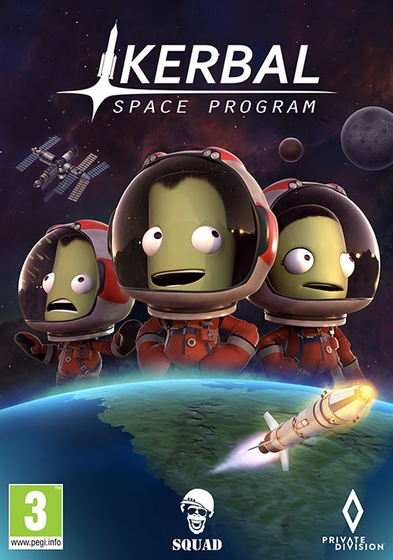
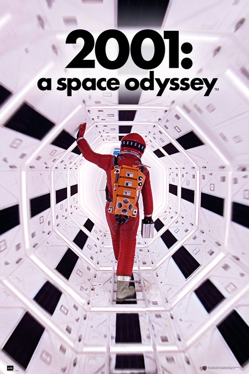

Ponte a la última con todas novedades sobre el espacio y los avances tecnológicos del espacio.
Historia
Empápate de la épica historia del esfuerzo y lucha de las grandes mentes, para
poder llegar a lo más alto.
Recomendaciones
Aquí encontraras libros, peliculas, juegos, etc.
centrados en el tema que abordamos.
Entradas
Las ultimas entradas
Sorprendente hallazgo
El rover Yutu-2 lo vuelve a hacer.
De nuevo a la Luna
Viajar de nuevo a la Luna en 2022
La ISS colisionará
La gran colisión de la ISS
¡Detecta, por primera vez, luz estelar!
Así es la primera imagen del telescopio espacial James Webb
Nave espacial del tamaño de una caja
Investigará un asteroide de unos 18 metros de ancho.
Michelin avanza en el neumático
El neumático que pisará el satélite en 2025
Hitos espaciales
Desde el preludio a las estrellas
1957
Sputnik 1
El Sputnik 1 fue el primer satélite artificial de la historia puesto en órbita.
Fue lanzado por la URSS el 4 de Octubre de 1957 en su programa Sputnik, el cual estubo 3 meses de mision, completando 1440 órbitas a la Tierra.
1957
Laika
Laika fue el primer ser vivo en orbitar la tierra, lanzada desde la Sputnik 2, el 3 de noviembre de 1957.
1961
Yuri Gagarin
Yuri Gagarin fué el primer ser humano que viajo al espacio en la cápsula Vostok 1, del programa Vostok el 12 de abril de 1961.
1963
Valentina Tereshkova
Valentina Tereshkova fue la primera mujer en viajar al espacio
desde la cosmonave Vostok 6
1965
Alekséi Leónov
Primera caminata espacial realizada por Alekséi Leónov, el cual estuvo 12' 9'' fuera de la Vosjod 2 del programa Vostok, el 18 de marzo de 1965.
1966
Venera 3
Venera 3 fué una sonda espacial sovietica, del programa espacial Venera, donde impactó en Venus el 1 de marzo de 1966, combirtiendose en el primer aterrizaje en otro planeta.
1969
Neil Armstrong
Neil Armstrong fué el primer hombre en pisar la Luna, el 20 de julio de 1969; En la nave Saturn V en la mison Apollo 11, con una duración de 8 dias.
1971
Salyut 1
Salyut 1 fué la primera estación espacial de la historia, gracias a la unión de dos satélites: Salyut 1 y la Soyuz 7KT-OK el 19 de abril de 1971.
1975
Apolo–Soyuz
Apolo–Soyuz fué la primera misión cooperativa entre USA y la URRS al mismo tiempo creado la primera estación internacional de la historia El 17 de julio de 1975.
Hitos
Por
Desbloquear
Recomendaciones
Nuestras recomendaciones
Kerbal Space Program

Videojuego donde nos ponemos el la piel de una
agencia espacial, para desarrollar nuestros proyectos de exploración espacial.
Ask an Astronaut - Tim Peake
Entretenido libro sobre prengustas comunes del publico, el cual Peake responde según su esperiencia en el espacio y pequñas anecdotas vividas.
Rocket Propulsion Elements
Avanzado libro para los amantes de la construcción y estudio de los cohetes.
Se centra en los motores de propulsión y toda la ciencia de la ingieneria espacial.
Apollo 13
Pelicula que relata uno de los momentos de la mison estadounidense, Apolo 13, donde la misión es llegar a la Luna.
2001: A Space Odyssey

Imposible no recomendar esta obra de arte, que independientemente de lo realista que sea, tiene que estar en nuestra lista de recomendados.
Space Engineers
Videojuego de exploración y construcción espacial, con licencias científicas,y modo multijugador.
colaboradores
Nuestros espertos en la materia
Pedro Duque
Astronauta e Ingeniero aeronáutico
Ellen Ripley
Suboficial del USCSS Nostromo
Elon Musk
CEO SpaceX
Un honor y orgullo tener estos magníficos colaboradores los cuales le agradecemos de corazón el esfuezo y ganas puesto en esta humilde aventura.
Contacta con nosotros
Dejanos saber cual es tu opinión al respecto.
Sorprendente hallazgo
El rover Yutu-2 lo vuelve a hacer.
El rover Yutu-2 de China encontró terreno pegajoso en el paisaje inexplorado de la cara oculta de la Luna, según revela su diario de viaje de dos años.
Un estudio publicado en Science Robotics describe suelo terroso, rocas gelatinosas y pequeños cráteres nuevos dentro del cráter Von Karman en la cuenca del Polo Sur-Aitken.
Investigadores del Instituto de Tecnología de Harbin y el Centro de Control Aeroespacial de Beijing han analizado los datos e imágenes recopilados por Yutu-2, ofreciendo un conocimiento geológico detallado en el lugar de aterrizaje que puede ayudar a profundizar la comprensión de la formación y evolución de la luna, informa Xinhua.
La sonda Chang’e-4 y el rover aterrizaron en el cráter Von Karman el 3 de enero de 2019. El rover ya ha funcionado durante tres años, sobreviviendo a su vida útil inicial diseñada de tres meses.
Redactado:
Pedro Duque
Categoria:
Noticias
De nuevo a la Luna
Viajar de nuevo a la Luna en 2022
Que el hombre pise la Luna es uno de los anhelos que no se ha vuelto a repetir en la historia desde las famosas imágenes de Neil Armstrong, aunque no son pocos los esfuerzos que se están haciendo para lograr que otra tripulación tome tierra en el satélite.
Así, hay varias misiones y proyectos tanto de la NASA como de otras empresas privadas de varios países del mundo que trabajan en misiones no tripuladas, que son la fase previa antes de mandar a los astronautas a la Luna.
La misión Artemis I de la NASA
La NASA está trabajando en su misión Artemis I, la primera misión del megacohete SLS y la cápsula Orion, en un viaje no tripulado de ida y vuelta al entorno lunar.
El lanzamiento estaba pensado para finales del año 2021, luego se atrasó a febrero de 2022 y, finalmente, se ha aplazado hasta el mes de abril o mayo de este mismo año.
De este modo, los ingenieros continúan el trabajo asociado con las tareas de finalización y las pruebas del conocido como sistema de terminación de vuelo antes del ensayo general, como recoge Europa Press, con el objetivo de garantizar que el sistema integrado esté listo para lanzar de forma segura la misión Artemis I.
Redactado:
Elon Musk
Categoria:
Noticias
La ISS se estrellará en 2031
La nasa explica como será el proceso.
La Estación Espacial Internacional (EII) ha sido un elemento clave en la investigación del Universo a lo largo de las últimas décadas, pero el fin de su vida útil está cada vez más próximo. Según la NASA, los componentes que instalaron hace poco permiten que la EEI se mantenga operativa hasta 2028.
El medio de comunicación Vox ha informado que en un principio la EEI iba a terminar con su misión en 2028. Sin embargo, los investigadores han dado más tiempo para que el sector privado mejore y se desarrolle.
Un informe de la agencia estatal estadounidense espera que la estación espacial aguante operativa “de manera segura” hasta finales de 2030. Una vez que el satélite artificial alcance su ‘fecha de caducidad’, sus 444.615 kilos que han recorrido la órbita terrestre baja durante años descenderán lentamente al interior de la atmósfera.
Client:
Finish
Redactado:
Ellen Ripley
Por pirmera vez,luz estelar
es la primera estrella detectada por este telescopio
El Telescopio Espacial James Webb ha logrado un hito importante tras desplegar un instrumento a bordo que detecta sus primeros fotones de una estrella distante.
Tras este hito, los ingenieros comenzarán otro proceso, en el que, durante tres meses, trabajarán para alinear los 18 espejos del telescopio espacial.
Este hecho llega después de años de retrasos y contratiempos, ya que, además, ha sido un proceso laborioso.
Este hecho de detección de luz estelar ha ocurrido durante los primeros días de febrero, durante su séptima semana y con un coste de diez mil millones de dólares.
“Este hito marca el primero de muchos pasos para capturar imágenes que al principio están desenfocadas y usarlas para ajustar lentamente el telescopio”, ha dicho la NASA en un comunicado anunciando el pasado 3 de febrero.
Redactado:
Pedro Duque
Categoría:
Noticias
nave espacial del tamaño de una caja
Investigará un asteroide de unos 18 metros de ancho.
El Near-Earth Asteorid Scout (NEA Scout) es una pequeña nave llamada CubeSat con el tamaño de una caja de zapatos que, utilizando una vela reflectante, se transportará a través del espacio para investigar una clase de asteroide poco conocida.
La NASA tiene previsto el lanzamiento de NEA Scout a finales de este año y será la primera misión espacial de la agencia en utilizar este mecanismo.
NEA Scout está compuesto por un pequeño CubeSat del tamaño de una caja de zapatos y una vela solar delgada recubierta de aluminio del tamaño de una cancha de ráquetbol.
Redactado:
Ellen Ripley
Categoría:
Noticias
Michelin avanza en el neumático
De la Tierra a la Luna: Michelin avanza en el neumático que pisará el satélite en 2025
El equipo de Investigación y Desarrollo de Michelin está inmerso en uno de los desafíos más apasionantes de su carrera: crear un neumático que ruede por la corteza lunar y resista las condiciones extremas a las que estará expuesto en el satélite de la Tierra.
El equipo de Investigación y Desarrollo de Michelin está inmerso en uno de los desafíos más apasionantes de su carrera: crear un neumático que ruede por la corteza lunar y resista las condiciones extremas a las que estará expuesto en el satélite de la Tierra.